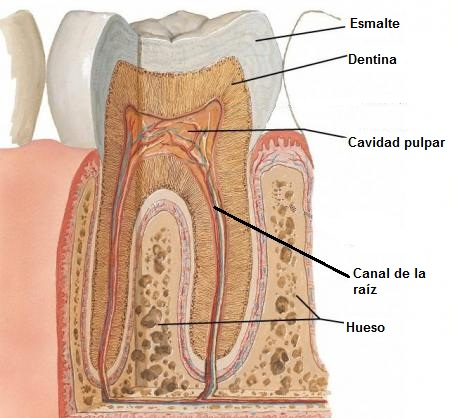
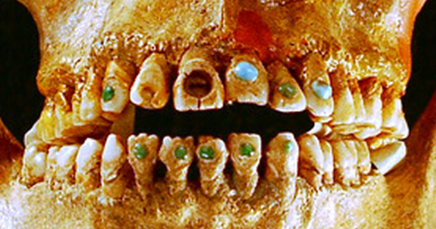

¡Increíble: súper duro !
El esmalte que recubre los dientes es la sustancia más dura del cuerpo, pero también la que se deteriora más fácilmente durante los primeros 25 años de vida.

Si bien es el tejido más duro del cuerpo humano, más duro que los huesos, a su vez es frágil. Esta dureza se la confiere un compuesto llamado hidroxiapatita, que también, está presente en los huesos pero en menor cantidad.
LOS MAYAS Y LAS JOYAS DENTALES
Se sabe que los mayas fueron una civilización avanzada. Hace unos 2.500 años, en el tema dental, los mayas ya tenían un conocimiento muy avanzado de dientes. Mientras que muchas personas hoy en día tratan de blanquear sus dientes , para los mayas que no era suficiente. Tendrían sus dentistas utilizan un taladro primitiva para decorar sus dientes.

A veces, tendrían partes del diente cortadas o en forma para que se vea más interesante. Sin embargo, su modificación más extrema fue el “bejeweling” de dientes.
Algunas personas , con más frecuencia los hombres , tendrían pequeños agujeros hechos en los dientes que fueron equipadas con piedras preciosas para que sus bocas se lucieran bastante. Los investigadores
creen que estos hallazgos muestran que los mayas eran muy hábiles en el trabajo dental, ya que podrían adaptarse a estas joyas en los dientes sin romperlos. Curioso verdad?